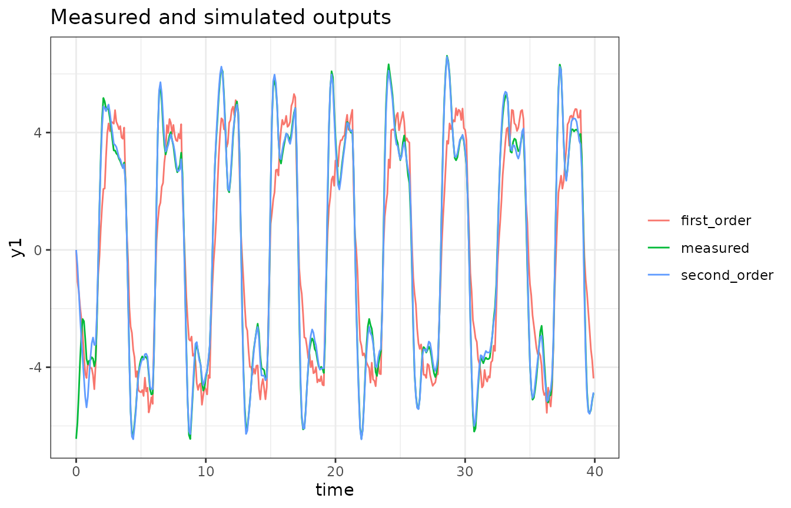
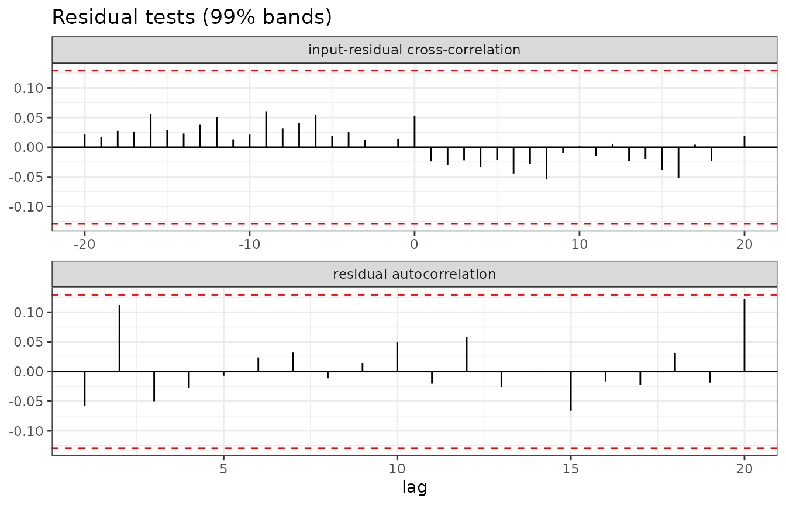

System identification builds models from measured data. controlcompR provides ARX estimation and subspace state-space identification natively, and converts models from the sysid package (ARX, ARMAX, output error, Box-Jenkins and more) so they can be used for design. Above all, it provides the validation tools that decide whether a model can be trusted.
Data
set.seed(1)
Tn <- 1000
u <- sign(sin(seq_len(Tn) / 7)) + 0.3 * rnorm(Tn) # rich input
e <- rnorm(Tn, sd = 0.05)
y <- numeric(Tn)
for (k in 3:Tn) {
y[k] <- 1.5 * y[k - 1] - 0.7 * y[k - 2] + 0.5 * u[k - 1] + 0.25 * u[k - 2] + e[k]
}
data <- ctrl_iddata(y, u, dt = 0.1)
data
#> Identification data: 1000 samples, 1 input(s), 1 output(s), dt = 0.1
parts <- ctrl_idsplit(data, 0.6)Validation data must not be used for estimation.
ctrl_idsplit() keeps the time order (no shuffling, which
would destroy the dynamics).
ARX models
A(q) y_k = B(q) u_{k-n_k} + e_k is linear in its parameters and is estimated by least squares with QR:
arx <- ctrl_arx(parts$estimation, na = 2, nb = 2, nk = 1)
arx
#> Identified ARX model (dt = 0.1)
#> orders na = 2, nb = 2, nk = 1; noise variance 0.002589
#> AIC -1860.91, BIC -1843.33
#> Transfer function (discrete time, dt = 0.1)
#>
#> 0.497 z + 0.256
#> ----------------------
#> z^2 - 1.499 z + 0.6999
cbind(estimate = c(arx$a, arx$b), std_error = sqrt(diag(arx$vcov)))
#> estimate std_error
#> [1,] -1.4993021 0.002974708
#> [2,] 0.6998862 0.002444879
#> [3,] 0.4970317 0.003646717
#> [4,] 0.2560055 0.004791825The standard errors assume white equation errors. When the noise
enters elsewhere (output error), ARX estimates are biased and their
standard errors meaningless; use an output-error or Box-Jenkins model
from sysid.
Order selection
tab <- ctrl_arx_order(parts$estimation, na = 1:4, nb = 1:4,
validation = parts$validation)
head(tab)
#> na nb nk npar nobs aic bic validation_fit
#> 6 2 2 1 4 596 -1853.477 -1835.916 86.94246
#> 7 3 2 1 5 596 -1851.607 -1829.656 86.94247
#> 10 2 3 1 5 596 -1851.515 -1829.564 86.94241
#> 8 4 2 1 6 596 -1851.988 -1825.647 86.94205
#> 11 3 3 1 6 596 -1850.923 -1824.582 86.94305
#> 14 2 4 1 6 596 -1850.504 -1824.162 86.94152Information criteria (BIC penalizes complexity more than AIC) and the simulation fit on validation data should agree; when they do not, prefer the validation data and residual tests.
Validation: simulation and prediction fit
cmp <- ctrl_compare(parts$validation,
first_order = ctrl_arx(parts$estimation, 1, 1, 1),
second_order = arx)
cmp
#> model output simulation_fit prediction_fit
#> 1 first_order y1 58.45447 81.03366
#> 2 second_order y1 86.94238 90.25648
plot(cmp)
The simulation fit (input only) is the demanding test for control design: the one-step prediction of a poor model can look excellent because it uses past outputs.
Residual tests
res <- ctrl_resid(arx, parts$validation)
res
#> Residual analysis (398 samples)
#> autocorrelation within 99% band: TRUE (Ljung-Box p = 0.307)
#> correlation of residuals with current and past inputs within 99% band: TRUE
plot(res)
White residuals that are uncorrelated with past inputs indicate that the model has captured the dynamics. A too simple model fails the tests:
ctrl_resid(ctrl_arx(parts$estimation, 1, 1, 1), parts$validation)
#> Residual analysis (399 samples)
#> autocorrelation within 99% band: FALSE (Ljung-Box p = 0)
#> correlation of residuals with current and past inputs within 99% band: FALSESubspace identification for MIMO systems
ctrl_n4sid() (past-output MOESP) estimates state-space
models of any order and dimension. The singular values of a projected
data matrix reveal the order:
set.seed(2)
true <- ctrl_ss(matrix(c(0.8, 0.3, -0.3, 0.8), 2), cbind(c(1, 0), c(0.2, 1)),
rbind(c(1, 0.5), c(0, 1)), dt = 1)
U <- matrix(rnorm(2 * 800), 800)
Y <- ctrl_simulate(true, input = U, times = 0:799)$y[, , 1] +
matrix(rnorm(1600, sd = 0.02), 800)
ss_model <- ctrl_n4sid(ctrl_iddata(Y, U))
ss_model$order
#> [1] 2
plot(log10(ss_model$singular_values), type = "h", ylab = "log10 singular value")
rbind(estimated = sort(Mod(ctrl_poles(ss_model$sys))),
true = sort(Mod(ctrl_poles(true))))
#> [,1] [,2]
#> estimated 0.8543902 0.8543902
#> true 0.8544004 0.8544004The instruments (past inputs and outputs) make the estimates consistent in open loop for white or colored output noise. Data recorded in closed loop bias the estimates.
Models from sysid
if (requireNamespace("sysid", quietly = TRUE)) {
d <- sysid::idframe(output = y[1:600], input = u[1:600], Ts = 0.1)
armax <- sysid::armax(d, c(2, 2, 1, 1))
conv <- ctrl_from_sysid(armax)
print(conv$plant)
print(ctrl_compare(parts$validation, armax = conv$plant, arx = arx))
}
#> Transfer function (discrete time, dt = 0.1)
#>
#> 0.4956 z + 0.2568
#> ----------------------
#> z^2 - 1.499 z + 0.6998
#> model output simulation_fit prediction_fit
#> 1 armax y1 86.94223 NA
#> 2 arx y1 86.94238 90.25648From model to controller
A model that fits validation data well is still not automatically adequate for feedback: what matters is accuracy near the crossover frequency of the intended loop. Check the model’s frequency response against nonparametric estimates where possible, design conservatively and use the robust stability tests of the robust control article with a weight that reflects the model error.